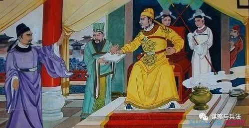

作为一个领导者，你的业务能力可以不如下属，但是为人处事方面却必须远超对方。而为人处事的能力常常体现在说话方面，特别是当众讲话，这更是领导者必须研究的看家本领。黄石公虽然没有能成为领导者，但是他的弟子张良确实名符其实的帝王之师，对于领导艺术的研究极为深刻。黄石公认为会讲话是领导者发号施令的基础，只有这种一对多的沟通方式才能驾驭人数众多的组织，而要做好当众讲话则需要注意以下几点技巧：
1.奠定基调
黄石公讲：“以言取怨者祸。”其实不仅仅是平时说话容易祸从口出，作为领导者当众讲话更容易因为措辞不当，而遭致众怒。因此高明的领导者在当众讲话或者发表自己的意见之前，必须要花很多功夫来为自己表态奠定基调。一般来讲，领导者讲话的基调应该是积极正面的，以团结和鼓励大家去行动为主，引领大家为美好的未来而拼搏，而不应该吹毛求疵，打击大家的士气。
2.引入主旨
在基调定好之后，怎么样引入讲话的主旨就成了关键所在。黄石公指出：“令与心乖则废。”就是提醒所有领导者，你对下属和听众所提的任何要求，都不能违背对方心中的愿望。具体怎么操作呢？第一，明确下属或听众中大多数人的共同心愿；第二，清楚领导者自己的战略意图；第三，尽可能选择两者的交集，以交集内容作为讲话的重点和导入主旨的引子。比如说，刘邦起兵讨伐项羽时，绝口不提其与项羽个人恩怨和利益冲突，而以为“义帝”复仇这个普遍的社会心理，为号令天下的旗帜。
3.理顺逻辑
大家知道，领导者一般不轻易表态，一旦表态就是“金口玉言”。因此黄石公强调：“后令谬前令者毁。”就是说，作为领导者，他在公众场合发布的意见，决不能出现前后不一致或是自相矛盾的情况。虽然领导者在下属面前是处于强势地位，没有人敢当面叫板，但是不排除一些狡诈之徒，采取“以子之矛攻子之盾”的策略来攻击我们。唐太宗有很多次被魏征这样钻空子，虽然成就了一世英名，但是相信当时也是“哑巴吃黄连”吧。

中国传统文化发源于我们脚下这块土地，对于我们来说应该是最接地气的。在我们花费大量时间和精力研究西方管理理论的同时，适当地重温一下《孙子兵法》、《鬼谷子》等国学智谋经典，对我们的工作生活来讲，说不定实际帮助更大！
（欢迎想系统学习兵法的朋友搜索并关注微信公众号：moulueyubingfa 或“谋略与兵法”关注。不懂谋略与兵法，怎能从容应对日益激烈的竞争？）